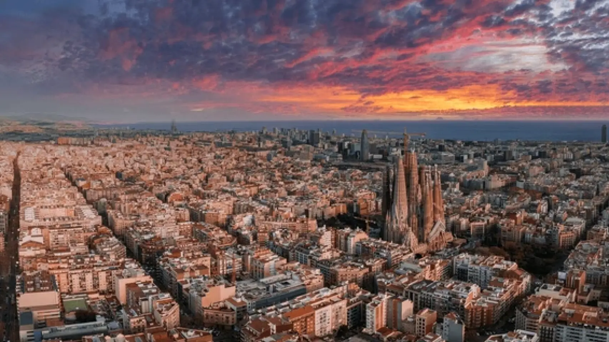
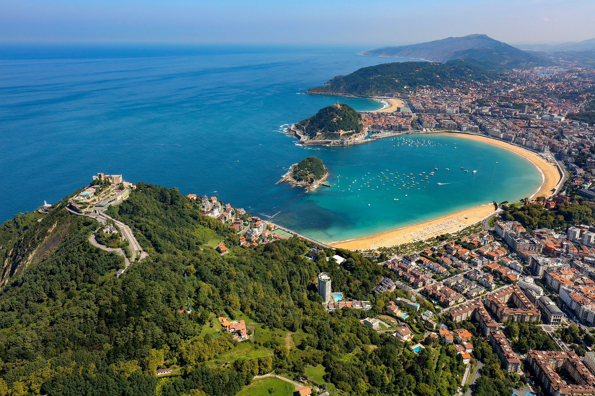
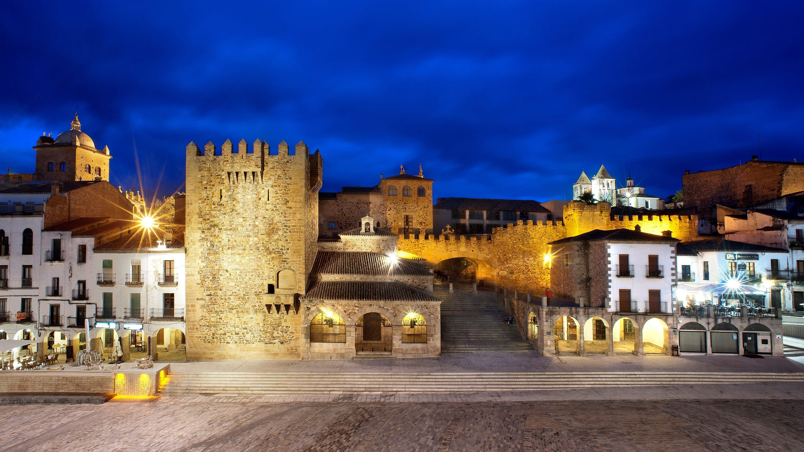

Barcelona

Lugares declarados Patrimonio de la Humanidad, preciosos parques, míticas avenidas, fantásticos barrios y monumentos únicos convierten a Barcelona en una las ciudades más visitadas de España. Una urbe abierta y con un ambiente muy special en la que merece la pena pasar unos días disfrutando de los mejores lugares que ver en Barcelona.
Bahía de la Concha (San Sebastian)

Esta preciosa y fotografiada bahía es emblema de la ciudad y uno de los imprescindibles que ver en San Sebastián. Bañada por las aguas del mar Cantábrico, se encuentra custodiada por los montes Urgull e Igueldo que vigilan desde ambos lados la Isla de Santa Clara. En ella también se encuentra una de las playas urbanas más bellas de España, La Concha. Además, a los pies del monte Igualdo puede verse el Peine de los Vientos, obra del escultor Eduardo Chillida. Ingredientes más que suficientes para considerarla uno de los mejores lugares que ver en España.Es, sin duda, uno de los mejores destinos para descubrir alomándote en un alquiler vacacional en España.
Avila
Ávila, una de las 15 ciudades declaradas Patrimonio de la Humanidad en España. Su majestuosa muralla de 2.516 metros de longitud, con 87 torreones, 9 puertas y 2 porteras, es uno de los recintos amurallados más importantes de Europa y seña de identidad de la ciudad. Además, no debes marcharte de Ávila, uno de los mejores sitios que ver en España, sin visitar el Convento de Santa Teresa, el Real Monasterio de Santo Tomás y su catedral.
Caceres

Declarada Patrimonio de la Humanidad, la ciudad de Cáceres cuenta con todos los ingredientes necesarios para para ser uno de los mejores lugares que ver en España. Paseando por sus calles podrás disfrutar de preciosos rincones y monumentos únicos, además de respirar la historia que albergan, con huellas de las cinco civilizaciones que las han habitado. Su Plaza Mayor es el centro neurálgico de la ciudad
Santiago de Compostela

La ciudad de Santiago de Compostela es uno de los principales destinos del Camino de Santiago. Su catedral, declarada Patrimonio de la Humanidad, alberga el sepulcro del apóstol Santiago. La ciudad ofrece una combinación única de historia, cultura y arquitectura que la convierte en un lugar imperdible para los visitantes.
bibliografia
Fuente principal